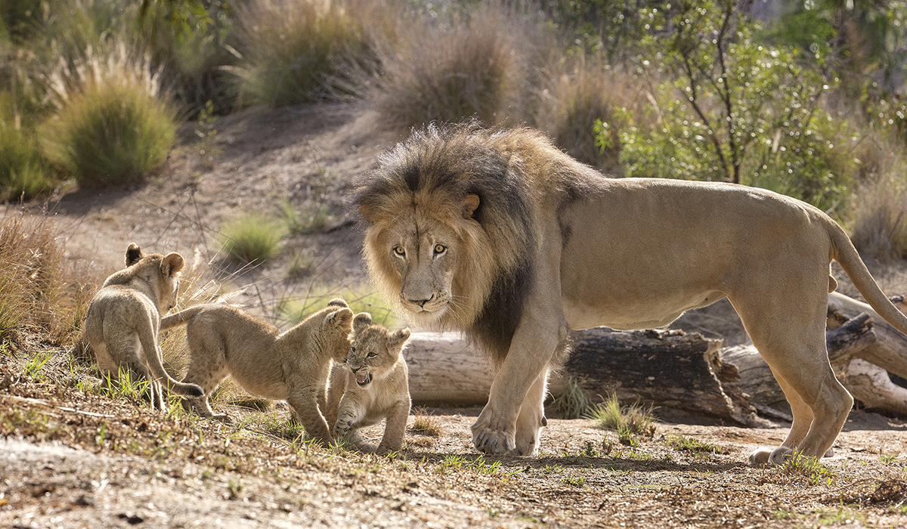
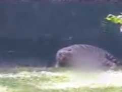
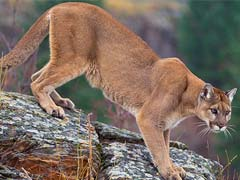
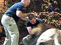
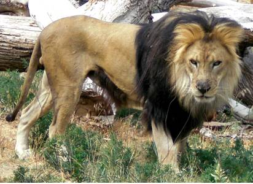
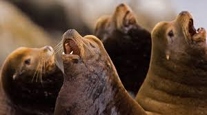

Lion:
The lion (Panthera leo) is one of the big cats in the genus Panthera and a member of the family Felidae. The commonly used term African lion collectively denotes the several subspecies in Africa. With some males exceeding 250 kg (550 lb) in weight,it is the second-largest living cat after the tiger.

welcome to Lion's life
 You may have heard the lion Panthera leo referred to as the “King of the Jungle”—but that’s an ironic name, because lions aren’t found in that dense, tangled type of habitat. They are, however, one of the rulers of grasslands, open woodlands, and scrublands. They may have inhabited other biomes in the past; lions as we know them once thrived in Europe, Asia, India, and Africa. Today, there are two recognized subspecies, Panthera leo leo and Panthera leo melanchaita. There are between 17,000 and 19,000 of the leo subspecies scattered across southern and eastern Africa; there are only about 1,400 of the endangered melanchaita subspecies left, which live in small African populations and one population under human protection in India’s Gir Forest.Compared to other members of the big cat genus Panthera—tigers, leopards, and jaguars—lions stand out both physically and behaviorally. They are the only cat with a tufted tail, as well as the sole feline species to display dramatic sexual dimorphism: regally ruffed males are easily distinguished from sleek females. And, of course, lions are the only cats that live in large social groups. Most people today know that a group of lions is called a pride, but that wasn’t always the case. Although humans shared habitat with these social cats for thousands of years, the first evidence of a name for a group of lions doesn’t show up until the 15th century, and it wasn’t common until the 1930s. Why a “pride”? The official reasoning is lost to the ages, but the sight of a group of lions striding along together does seem to embody the confidence and satisfaction the word conveys.A pride is made up of lionesses (mothers, sisters, and cousins) and their cubs, a few related sub-adult males, and, of course, the reigning adult male. The size of the group can vary depending on location, usually numbering 3 to 30 individuals. In dry areas with less prey, prides are smaller; habitats with more food and water allow for the survival of more members. It isn’t uncommon to come across lions that do not live in prides, though. Called nomads, they range far and wide while following migrating herds of large game. They are generally young males, roaming in pairs or small groups and often related to one another, but female nomads exist, too.Related lionesses, especially the older ones, usually live together. Adult males, however, may only stay with a pride for two to three years. During that time, their main job is to defend the pride’s territory—its pantry, so to speak. The pride spends the day’s hottest hours resting. At nightfall, they disperse: females to hunt, and males to patrol and protect the boundaries of the domain. There are almost always unaffiliated male lions looking to take over a group of females. If the newcomers are able to vanquish the reigning males, they win the pride.The lionesses work together to hunt and rear the cubs. This cooperation streamlines their survival: they get the most from their hard work, increasing the odds of keeping everyone healthy and safe. The division of labor between males and females makes sense, as lionesses are smaller, lighter, more agile, and faster sprinters than males. Hunting as a group increases the odds of a successful hunt; there is a better chance that the lions have food when they need it. While hunting, smaller females typically chase prey toward the center of the group. The larger and heavier lionesses ambush or capture the prey. Lionesses are versatile and can switch jobs, depending on which females are hunting that day and what kind of prey they are stalking.Females—and even males—do sometimes hunt on their own. Generally, this approach yields smaller prey, such as a warthog or Thomson’s gazelle. The big prize, however, takes teamwork. An adult male can eat nearly 90 pounds of meat at a single meal, so bigger prey yields a better return on investment..
 Six years ago, an inebriated man had fallen into the enclosure of a lioness at the Delhi zoo, but luckily for him, the lioness spared his life, zoo officials in the national capital said today, after a white tiger mauled a man to death.
 A Colorado boy attacked by a mountain lion near Aspen was improving in a Denver hospital after his mother snatched him from the jaws of the wild cat, his family said today.
 The newlyweds Titus and Drew Ellis were at the MGM Grand in Las Vegas, videotaping the lion habitat when all of a sudden one of the lions lunged at one of the trainers. A struggle ensued, and the trainer managed to break free with the help of his colleagueWatch the dramatic footage here.
Idaho wildlife managers on Monday praised family members who charged a mountain lion and rescued a young girl from the jaws of the animal which was attempting to drag her off for the kill.
 The head-body length of the American lion is estimated to have been 1.6–2.5 m (5 ft 3 in–8 ft 2 in) and it would have stood 1.2 m (3.9 ft) at the shoulder. Thus, it was smaller than its contemporary competitor for prey, the giant short-faced bear, which was the largest carnivoran of North America at the time. The American lion was not as heavily built as the saber-toothed cat,Smilodon populator,which may have weighed up to 400 kg (880 lb).Sorkin (2008) estimated the American lion to weigh roughly 420 kg (930 lb),but a more recent study showed an average weight for males of 256 kg (564 lb) and 351 kg (774 lb) for the largest specimen analyzed.The Best of American Lion was released
 White Lion was a Danish/American rock band that was formed in New York City in 1983 by Danish vocalist Mike Tramp and American guitarist Vito Bratta. Mainly active in the 1980s and early 1990s, releasing their debut album Fight to Survive in 1985. The band achieved success with their No. 8 hit "Wait" and No. 3 hit "When the Children Cry" from their second album, the double platinum selling Pride.[1] The band continued their success with their third album, Big Game which achieved Gold status and their fourth album Mane Attraction which included a supporting tour. White Lion disbanded in 1992 and not long after their first compilation album, The Best of White Lion was released.
White Lion was a Danish/American rock band that was formed in New York City in 1983 by Danish vocalist Mike Tramp and American guitarist Vito Bratta. Mainly active in the 1980s and early 1990s, releasing their debut album Fight to Survive in 1985. The band achieved success with their No. 8 hit "Wait" and No. 3 hit "When the Children Cry" from their second album, the double platinum selling Pride.[1] The band continued their success with their third album, Big Game which achieved Gold status and their fourth album Mane Attraction which included a supporting tour. White Lion disbanded in 1992 and not long after their first compilation album, The Best of White Lion was released.
 The California sea lion (Zalophus californianus) is a coastal eared seal native to western North America. It is one of five species of sea lion. Its natural habitat ranges from southeast Alaska to central Mexico, including the Gulf of California. Sea lions are sexually dimorphic, males are larger than females, and have a thicker neck and protruding crest. They mainly haul-out on sandy or rocky beaches, but they also frequent manmade environments such as marinas and wharves. Sea lions feed on a number of species of fish and squid, and are preyed on by orcas and white sharks.California sea lions have a polygynous breeding pattern. From May to August, males establish territories and try to attract females with which to mate. Females are free to move in between territories, and are not coerced by males. Mother by males